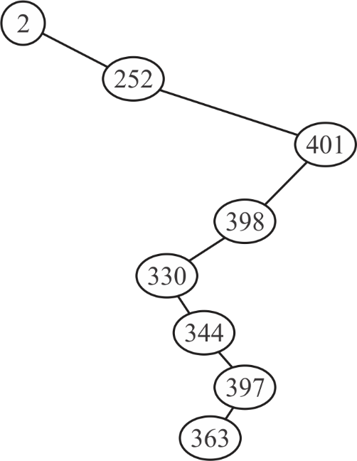
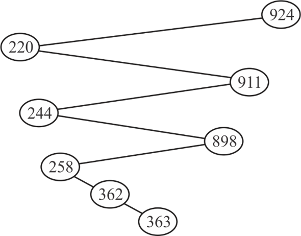
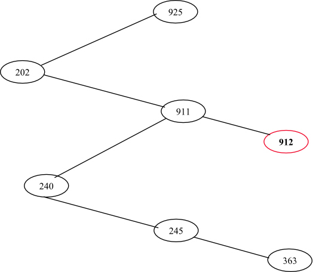
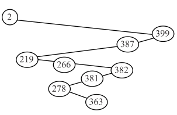
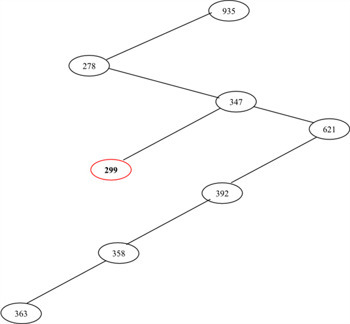
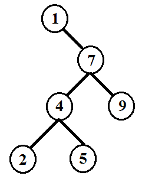
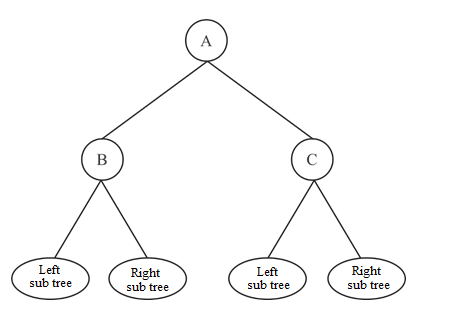
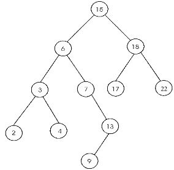
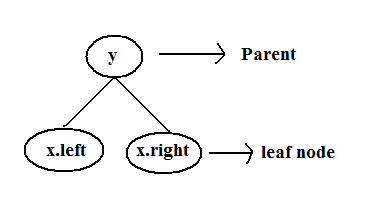
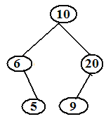

Binary search tree (BST) is the tree in which all elements are stored according to the following key property.
Key property of the binary search tree:
The key of a parent node p of a subtree in the BST, must be greater than key of its left node x(i.e, x.key > p.key) and less than or equal to the key of its right node y(i.e, p.keyy.key).
a)
Consider the given sequence. When searching for 363, the following given nodes are examined in the following order.

• It is possible to draw a binary search tree with the given sequence of numbers and also it follows the key property of binary search tree.
• While searching for 363 using key property of BST, all the given numbers are examined in the given sequence.
Thus, the given sequence could occur when searching the number 363.
b)
Consider the given sequence. While searching for 363, the following given nodes may examined in the following order.

• It is possible to draw a binary search tree with the given sequence of numbers and also it follows the key property of binary search tree.
• While searching for 363 using key property of BST, all the given numbers are examined in the given sequence.
Thus, the given sequence could occur when searching the number 363.
c)
Consider the given sequence. While searching for 363, the following given nodes may examined in the following order.

• Observe the binary search tree drawn with the given sequence of numbers. It is clear that, while searching the number 363, the node 912 is not examined, because 363 is less than 911.
Thus, the given sequence of nodes could not examined when searching for the number 363.
d)
Consider the given sequence . While
searching for 363, the following given nodes may examined in the
following order.
. While
searching for 363, the following given nodes may examined in the
following order.

• It is possible to draw a binary search tree with the given sequence of numbers and also it follows the key property of binary search tree.
• While searching for 363 using key property of BST, all the given numbers are examined in the given sequence.
Thus, the given sequence could occur when searching the number 363.
e)
Consider the sequence to search the number.

• Observe the binary search tree drawn with the given sequence of numbers. It is clear that, while searching the number 363, the node 299 is not examined, because 363 is greater than 347.
Thus, the given sequence of nodes could not examined when searching for the number 363.
Consider the following procedure that finds the predecessor of a node in a tree. If no two elements in the tree are same, then the predecessor of a node x is the largest key that is less than x.key.
TREE-PREDECESSOR (x)
//check the left node of binary tree
1. if x.left NIL
// find maximum from left of tree
2. return TREE-MAXIMUM (x.left)
//store the parent of x into variable y
3. y = x.p
//condition is used to check the
4. while y NIL and x = = y.left
// go up by updating the node x and node y
5. x = y
6. y = y.p
//return the value of y that is the predecessor of x.
7. return y
Explanation for the Algorithm:
• The above algorithm checks for the left sub tree and if the left subtree is not empty , then the predecessor of x is maximum element in the left subtree of node x. it is returned in the line 2.
• If the left subtree is empty, the algorithm, in the lines 3-6, moves up from the node x until a node that is the right child of its parent, is encountered. The node is returned in the line 7.
The running time of TREE-PREDECESSOR is also same as the running time of TREE-SUCCESSOR. That is, O(h). Where h is the height of the tree.
Counter Example for Professor Bunyan Claim
Consider the binary search tree which contradicts the professor Bunyan claim. Suppose that the key k in a binary search tree ends up in a leaf. And also consider three sets:
A = {the keys to the left of the search path}
B = {the keys on the search path}
C = {the keys to the right of the search path}
And Professor Bunyan claims that any three keys and
 must satisfy.
must satisfy.
Now, see the following figure is the counter example for Professor Bunyan claim. Here assume that the search ended at 5. The three sets are:

Example to Professor Bunyan Claim
Note that ‘2’ is present in set A but it is greater than ‘1’ present in set B.
If in-order tree walk prints a sequence …xyz…, then x is called predecessor of y and z is called successor of y.
For suppose, consider a node A that has two children B and C, in the binary search tree. Also assume, node B is the predecessor of v and the node C is the successor of the v. That is , in-order tree walk algorithm prints a sequence …BAC…for the following tree.

Predecessor B has no right child:
• If the element B has a right child, then according to the key property of binary search tree, the right child must be greater than B.
• Thus, B.right will be printed after B and before A, by the in-order tree walk. That is, the sequence printed by the in-order tree walk is …B,B.right,A,C… . Hence, B is not the predecessor of A. but, it is the contradiction to our assumption.
Therefore, if A has two children B,C and B is the predecessor of A and C is the successor of A , then the predecessor of A(B) has no right child. That is, B.right is NIL.
Successor C has no left child:
• If the element C has a left child, then according to the property of binary search tree, the C.left must be less than or equal to C.
• Thus, C.left will be printed after A and before C, by the in-order tree walk. That is, the sequence printed by in-order tree walk is …B,A,C.left,C… . Hence, C is not the successor of A. but, it is the contradiction to our assumption.
Therefore, if A has two children B,C and B is the predecessor of A and C is the successor of A , then the successor of A(C) has no left child.
Hence, if a node in the binary search tree has two children, then its predecessor has no right child and its predecessor has no right child.
If x is a node in a binary search tree T, then the nodes that are on the path from x to the root T are called the ancestors of the node x. Also the successor of node x in a binary search tree T, is the node with key that is smallest key greater than x.key.
Consider the following procedure to find the successor of the node x:
TREE-SUCCESSOR(x)
1. if x.right NIL
2. return minimum in the right sub tree of x
3. y = x.p
4. while and x = = y.right
5. x = y
6. y = y.p
7. return y
The above procedure returns the minimum of right sub tree of x, if the right sub tree is not empty. Otherwise, the procedure returns y. where y is the lowest ancestor of x, whose left child is x or an ancestor of x.
Proving that if the right sub tree of x is empty, then successor of x is the lowest ancestor of x , whose left child is also and an ancestor of x :
• Consider a binary search tree T and suppose that the right sub tree of node x in T is empty.
• According to the definition of binary search tree, the successor of a node x is the lowest key greater than x.key.
• If the right subtree of x is empty, then there exist a subtree that contains the node x such that the root(S) of is less than or equal to x and parent of S (y) is greater than x.key. Since, y is greater than S, S is the left child of y.
• Now, obviously, y is the successor of x. That is, y is the lowest ancestor of x whose left child(S) is also ancestor of x. sometimes, S is equal to x.
• Thus, if there exist such a sub tree, then y is the successor of x. otherwise, the successor is NIL.
If the right sub tree of x is empty, lines from 3-7 of TREE-SUCCESSOR find the successor of x. That is, the procedure climbs up to find an ancestor of x(S.p), whose left child(S) is also an ancestor of x.
• If right sub tree of x is empty, then the parent of x becomes y. That is, y is an ancestor of x.
• In Line 4, the while loop is executed until there is a parent y for x and x is the right child of y . That is, each time the while loop finds an ancestor(y) of x.
• In each iteration of the while loop, y becomes the parent of x. while loop breaks when x becomes the right child of y. Then, y returned as the successor of x. where y is the lowest ancestor of x, whose left child is also an ancestor of x.
Therefore, if the right subtree of a node x in a binary search tree T is empty and x has a successor y , then y is the lowest ancestor of x whose left child is also an ancestor of x.
Example:
Consider the following binary search tree

Finding the successor of the node with key 13:
1. Since the node 13 has no right sub tree, node 7 becomes the y. Also, x is the right child of y.
2. Therefore, node 6 becomes the y and node 7 becomes x.
3. Since, the node 7 is the right child tree of 6, node15 becomes y and node 6 becomes x.
4. But now, the node 6 is not right child of 15.
5. Therefore, node 15 is returned as the successor of 13.
Here, 15 is the lowest ancestor of 13, whose left child (6) is also an ancestor of 13.
Finding the successor of the node with key 17:
1. Since the node 17 has no right sub tree, node 18 becomes the y.
2. But node 17 is not the right child of node 18.
3. Therefore 18 is returned as the successor of node 17.
Here, 18 is the lowest ancestor of 13, whose left child (13) is also an ancestor of 13.(a node is its own ancestor) .
• Let x be the starting node and y be the ending node after k successive calls to TREE-SUCCESSOR.
• Let p be the simple path between x and z.
• Let z be the lowest common ancestor of x and y that is visited by the path p.
• The length of the path p is at most .Successive calls will never traverse a single edge more than twice since TREE-SUCCESSOR acts like a tree traversal, so never examine a single vertex more than 3 times.
• Let the output be the elements that their values are between x.key and y.key. The size of the output is . Any vertex whose key value is not between x and y will be examined only once and it will occur on a simple path from x to y or z to y.
Thus, in the execution of k successive calls to TREE-SUCCESSOR the nodes that are in the path p are visited and besides the nodes x, y and z, if a subtree of a node in p is visited then all its elements are in the output.
The running time is:
Consider T be a binary tree whose keys are distinct. We define the successor and predecessor of any node x as the node returned by calls made to TREE-SUCCESSOR(x) and TREE-PREDECESSOR(x).Let x be a leaf node, and y is parent. The figure shown below:
Binary search tree (T) :

If x is a leaf node, then if p[x] = y and x is the left child then running TREE SUCCESSOR yields y.consider the following binary search tee is.
Example:

Here y.key (6) is either the smallest key in T or larger than x.key (5). Similarly if x is the right child then running TREE PREDECESSOR yields y.